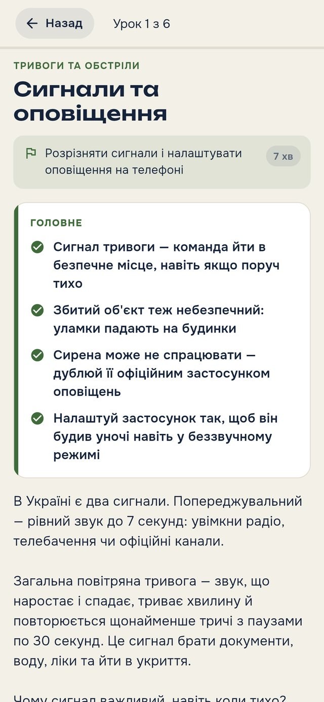
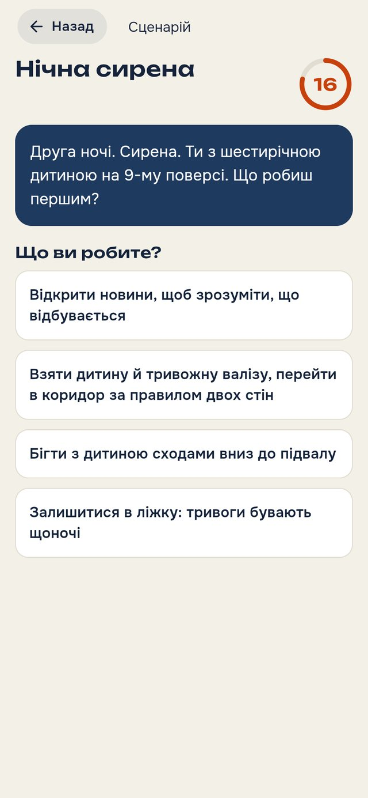
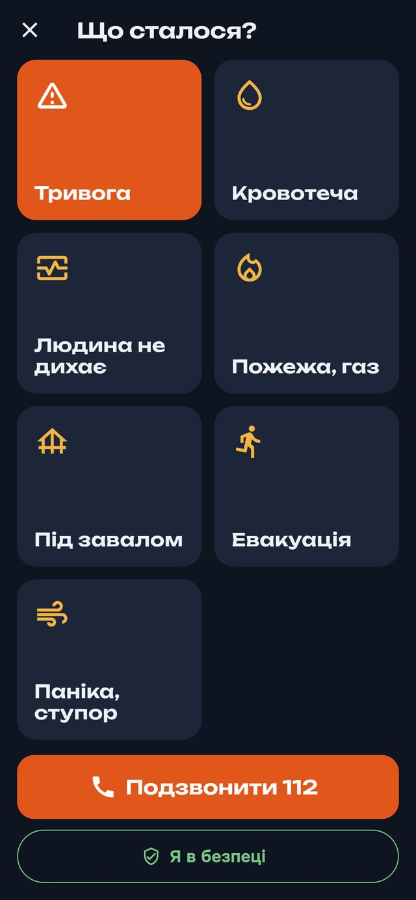
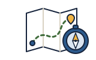
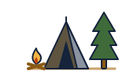
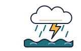

Gatavības akadēmija
Civilā sagatavotība, balstīta uz Ukrainas pieredzi. Ziniet, ko darīt gaisa trauksmes, elektrības atslēguma, traumas vai dabas katastrofas laikā, un jums būs gatavs plāns sev un ģimenei.
Kā tas izskatās
Lietotnes darba versija: īsas nodarbības, lēmumu treniņš un palīdzība krīzē — arī bez interneta.




Astoņas zināšanu jomas
23 kursi un 146 nodarbības: no pirmās gaisa trauksmes līdz nedēļai bez elektrības un sakariem.

Civilā gatavība
Trauksmes, patvertnes, apšaudes, drošība uz ielas, elektrības atslēgums, evakuācija
Medicīna
Asiņošanas apturēšana, atdzīvināšana, traumas, psiholoģiskā pirmā palīdzība

Orientēšanās un navigācija
Karte, kompass, azimuts, deklinācija, Polārzvaigzne, saule
Psiholoģiskā noturība
Kā darbojas bailes, pūlis, paškontrole, ilgstoša krīze
Draudi un drošība
Droni un raķetes civiliedzīvotājiem, atlūzas, kā mainījies karš

Lauka prasmes
Izdzīvošanas prioritātes, ūdens, uguns, pajumte, signāli

Dabas katastrofas
Vētra, viesuļvētra, plūdi, sals, karstums, meža ugunsgrēki, pērkona negaiss
Lekcijas „Saprast pasauli”
Ģeopolitika, psiholoģija, ģeogrāfija: autorlekcijas padziļinātai lasīšanai
No zināšanām līdz rīcībai
- Kursiinteraktīvas nodarbības, noslēguma eksāmens un sertifikāts, ar kuru var dalīties
- Scenāriji29 situācijas „ko darīt, ja…”, lai lēmumus izmēģinātu jau iepriekš
- Mans plānsgatavības indekss, 72 stundu komplekts un ģimenes plāns
- Krīzes režīmssvarīgākās instrukcijas pa rokai, vienmēr bez maksas un bez interneta
- Bibliotēkajūsu dokumenti un instrukcijas PDF un foto formātā, pieejami bezsaistē
- Atgādinājumiatjaunot ūdens krājumu, pārbaudīt aptieciņu, patrenēties uzlikt žņaugu
Kas stāv aiz satura
Mēs neizdomājam drošības noteikumus: apkopojam to, kas jau ir sevi pierādījis Ukrainā, un dodam to pārbaudīt tiem, kas to zina no prakses.
Veterāni
Orizo Labs dibinātāju un ekspertu vidū ir veterāni ar daudzu gadu pieredzi, tostarp starptautiskā līmenī. Viņi kopā analizē nodarbības par draudiem, patvertnēm un rīcību krīzē, lai padomi darbotos reālajā dzīvē, nevis tikai uz papīra.
Praktiķi instruktori
Pirmās palīdzības, orientēšanās un lauka prasmju saturu pārskata instruktori, kuri māca cilvēkus klātienē.
Oficiālie ieteikumi
Balstāmies uz publiskiem civilās aizsardzības dienestu ieteikumiem un atjaunojam nodarbības, kad mainās draudi.
Kam tas paredzēts
Ģimenēm
Mierīgi sagatavot māju, bērnus un tuviniekus — bez panikas un liekiem tēriņiem.
Skolām un skolotājiem
Gatavas nodarbības un eksāmeni klasēm ar skaidrojumiem vienkāršā valodā.
Kopienām un brīvprātīgajiem
Kopīga iedzīvotāju sagatavošana, grupu apmācība un instruktora žurnāls.
Eiropai
Ukrainas pieredze Lietuvas, Latvijas, Igaunijas, Polijas, Slovākijas un citu valstu iedzīvotājiem, kur gatavība ir kļuvusi par dzīves daļu.
Tikai civilais un aizsargājošais: kā atpazīt draudus un pasargāt sevi un citus. Bez kaujas taktikas, ieročiem vai instrukcijām, kas varētu kaitēt.